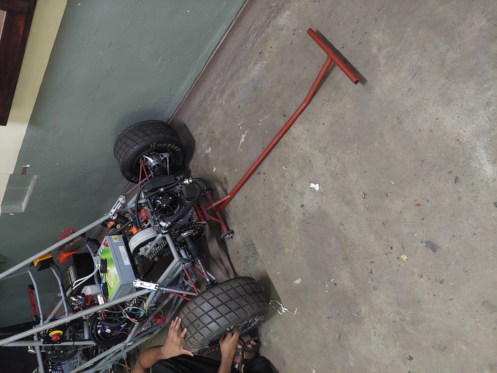
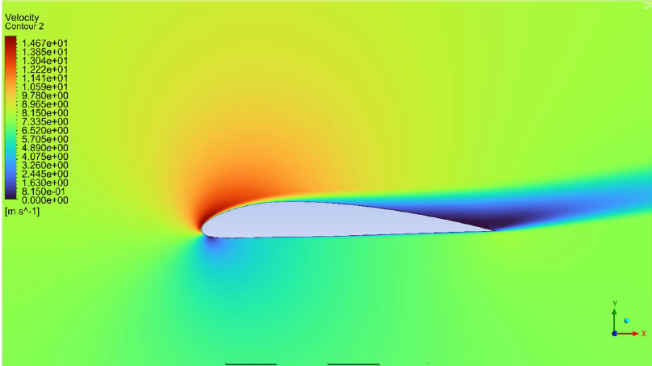
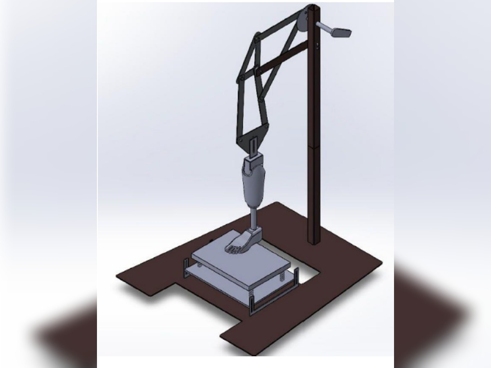
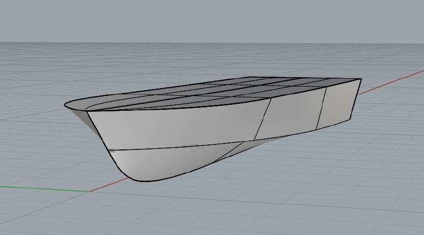
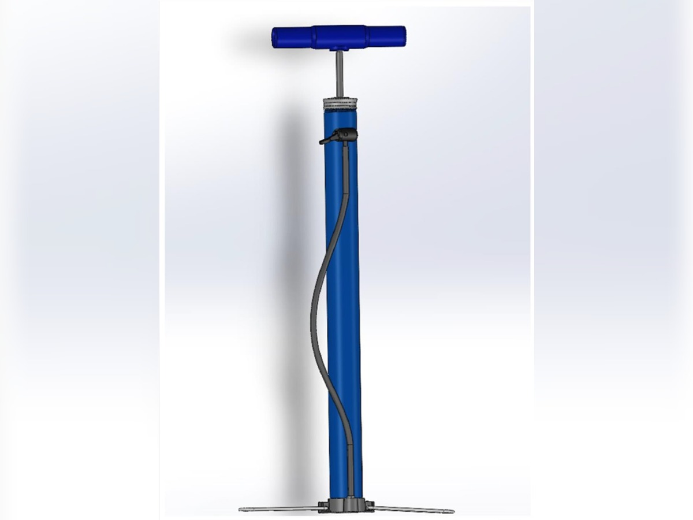

Engineering Projects
A showcase of hands-on engineering work spanning design, fabrication, simulation, and fluid dynamics research. Click See More on any project to view full details, photos, and reports.
Final Year Project
Final Year Project
Final Year Project · ANSYS Fluent CFD · FEA · Glass Fibre Fabrication
Design and Development of a Hydrodynamic Tunnel for Experimental Fluid Dynamics
Sri Lanka's first purpose-built hydrodynamic tunnel — a vertical, closed-loop facility designed, simulated, and fabricated from scratch to reproduce controlled flow regimes (Re 0–8,000) around a cylinder for external flow research. Four-phase process from literature-based configuration selection through MATLAB head-loss modelling, ANSYS Fluent CFD and FEA optimisation, to full glass-fibre fabrication and commissioning.
Explore the Full ProjectDesign & Manufacturing

SolidWorks · Manufacturing · Laser Cutting
Reusable Welding Jig — Vega Street Bike Chassis
Designed and fabricated a reusable welding jig using sheet metal and box sections to ensure precise chassis alignment during welding, with laser-level calibration for dimensional accuracy.
See More
SolidWorks · FEA · MIG Welding
Rear Paddock Stand — Vega Street Bike
Designed, FEA-validated, and physically fabricated a rear paddock stand in mild steel hollow sections. Von Mises stress and displacement analyses confirmed structural integrity under motorcycle rear weight loading.
See More
SolidWorks · Race Car · Structural Design
Quick Jack — Falcon E2 Race Car
Designed a rapid-deployment quick jack mechanism for the Falcon E2 Formula Student race car, optimised for pit-stop speed and tight packaging constraints within the vehicle's undercarriage.
See More
SolidWorks · Steering Geometry · Kinematics
Steering System Redesign — Falcon E2 Race Car
Replaced a failing cantilevered steering mount with a triangulated rigid structure, designed a laser-aligned bearing collar jig, and validated assembly to eliminate steering play and improve driver feedback.
See MoreFluid Dynamics

CFD · ANSYS Fluent · Turbulence Modelling
NACA-4312 Aerofoil CFD Simulations — ANSYS Fluent
Numerical analysis of NACA-4312 aerofoil aerodynamics including mesh generation, grid independence study, solution convergence analysis, and lift/drag coefficient validation against published experimental data.
See MoreMechanical Simulations

MATLAB · Simulink · Dynamics
Front Suspension Analysis — Vega Street Bike
Dynamic analysis of front suspension under bump excitation using MATLAB/Simulink — stiffness, damping, and ride comfort study investigating critical damping characteristics.
See MoreAcademic Projects

Machine Design · Gear Calculations · Shaft Design
Gearbox Design — Fine Material Washer
Detailed gearbox design for a PET recycling fine material washer, covering gear ratio selection, full gear and shaft calculations, and power transmission optimisation to replace inefficient direct motor control.
See More
Mechanism Design · Prosthetics · Fatigue Testing
Walking Mechanism for Below-Knee Prosthetic Leg Testing
Designed a mechanically driven walking mechanism to simulate the human gait cycle for prosthetic leg fatigue testing, covering heel-strike, stance, toe-off, and swing phases under realistic body loads.
See More
Naval Architecture · Hull Design · Hydrostatics
Concept Design of an Ambulance Craft
Full concept design of a marine ambulance craft including similar craft analysis, hull form development, 3D modelling in SolidWorks and Rhinoceros, lines plan generation, and intact stability assessment.
See More
Reverse Engineering · Material Analysis · Manufacturing
Reverse Engineering — Bicycle Air Pump
Systematic reverse engineering of a handheld bicycle air pump: material identification, manufacturing process evaluation, 3D CAD modelling of components in SolidWorks, and design modification proposals for improved durability.
See More